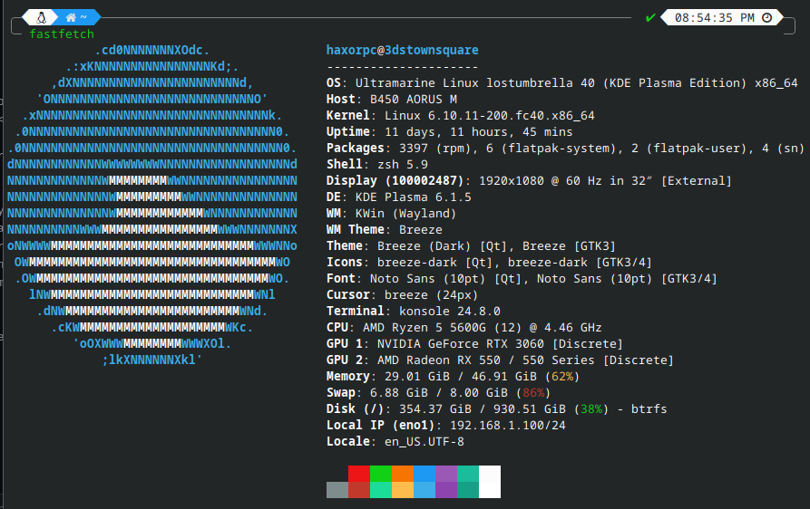

Hello! Welcome to my website!
If you didn't realize already, I'm a web designer. I made this page for a domain just so I could have a fancy domain handle on BlueSky
I am well-versed in the following languages:
- PHP
- HTML (if you can call that a language)
- JavaScript
- Python (ish)
- Node.JS (if that's seperate from JavaScript)
- Born in a small town in Alabama (just saying it will probably doxx me)
- Grasped the concept of the internet at the young age of 8!
- Born January 17th, 2005.
- I built a gaming PC using nothing but money earned from working at McDonald's!
- Created an unblocker program in school, never caught. (The extension that blocked stuff was poorly coded)
As a kid, I never took much thought in what family or country I was raised in. As a person who always wants to be in the know from day one, I've been using the internet since 2013 (when I was 8, yikes!) I remember my early days on the internet spent mostly browsing YouTube. I don't really know HOW I got into being on the internet, but let's just say I probably used an Android phone. Well anyways, back then I barely had a political opinion on anything, and it was only now, in the midst of all the stuff that happened in 2020 that I really discovered what I truly believed in. I suddenly had the ability to actually think for myself and not be lobbied in with the majority of people. As a person who lives in the US, I believe, like most Europeans and the sort, that the United States government probably needs a rework. I could go on and on about why, but that's not the point. The point is that people around me seem to be... how do I say this... very very uneducated and ignorant to the hard facts of reality. The founders of America didn't want a two party system. I can understand where he's coming from. Anyways, back to today, where I finally realized what I want out of this country, I kinda fell in the liberal pipeline on YouTube and my recommended has never been the same.
The pipeline is consuming my YouTube watch history please send help.
The struggle is real though. Being liberal is tough when everyone around you thinks so differently. I feel like I have to keep a list of sources with me to even begin arguing with someone. And in the end, the other person just won't agree. People will stand by their point of view for the rest of time. It's a lot of things that made me realize. It's the people that I DON'T want to be associated with that made me think. I do and truly support LGBTQIA+ and inclusivity as a whole (especially trans rights when my close Discord friend, Sudaox (their website) is trans themselves. A lot of people just have a "doesn't affect me, why should I care" additude, especially when they don't know anyone online or in real life who is trans.
But yeah, through all the thick and thin, I've managed to find myself quite the following on YouTube. (link to YouTube here)
I've been trying to find some things to talk about or do on my channel, but I've kind of put it aside as of now.
- Coding
- Politics (yeah, I don't know what in my brain decided I need to hyperfixate on this)
- Minecraft (the movie looks promising)
- Linux
- Nintendo, old and new
- Retro stuff
- I don't know what else to put here!
Here is a FastFetch of my system, so you know what it looks like.
